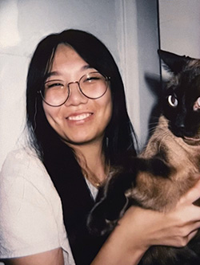

I’m a fourth year design major at UC Davis pursing UI/UX design. I come from a traditional art background which means I have a lot of experience in art and design.
I discovered my love for web design in my final semester of community college where I took an Introduction to Web Design class. I learned the basics of HTML and CSS there along with exploring more of my interests which ultimately directed me to UI/UX design and front-end web development.
Since then I have taken on multiple UI/UX, web design and development projects. Through my work I’ve uncovered my desire to create accessible and engaging digital products with improving the user’s experience in mind.
If you want to learn more about me, my work, or just want to chat, feel free to reach out to me.
For more details on my work experience, check out my resume.